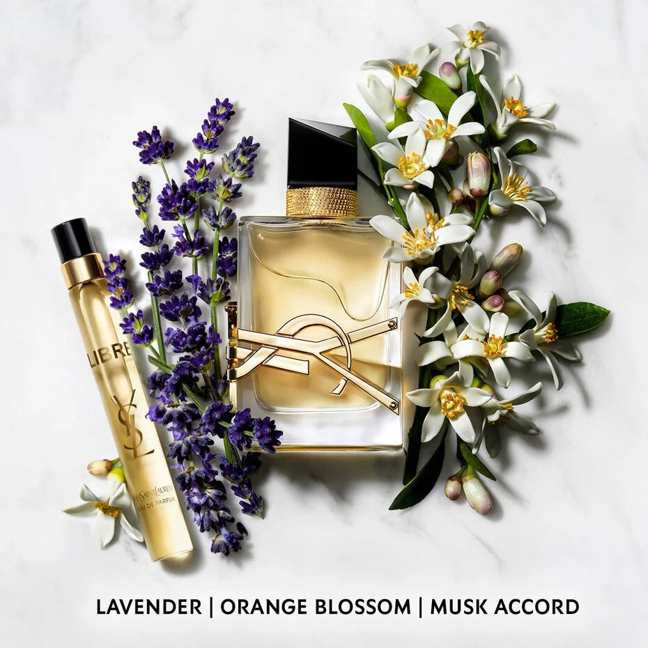
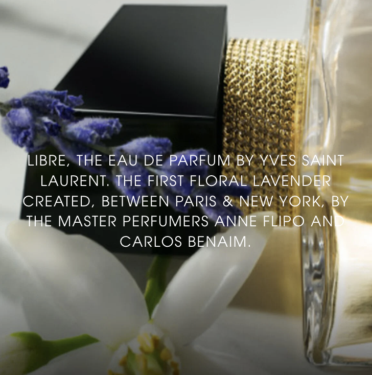
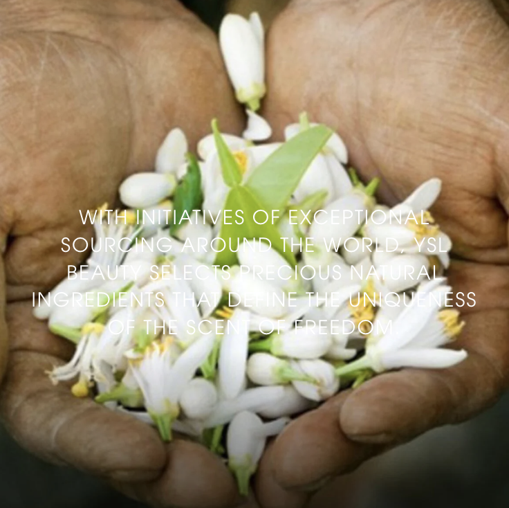
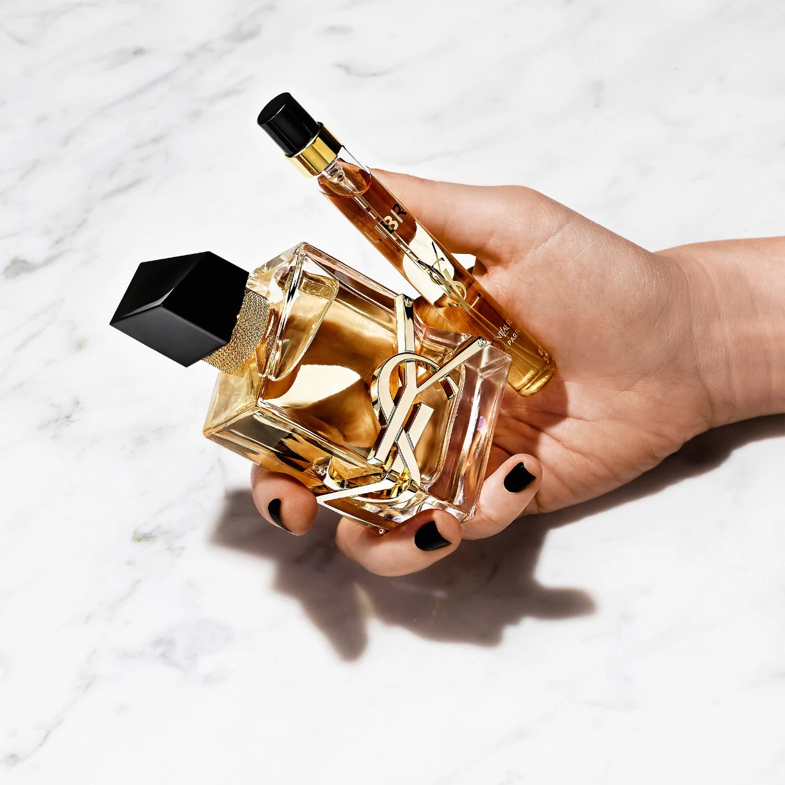

LIBRE
EAU DE PARFUM
Yves Saint Laurent
DESCRIPTION
Libre Eau de Parfum is a bold and floral perfume for women. A statement feminine fragrance for those who live by their own rules. Lavender essence from France combines with the sensuality of Moroccan orange blossom and daring notes of musk accord and vanilla for a unique long-lasting scent.
About the fragrance
A celebration of freedom, this daring, yet distinctly floral and feminine perfume is for those who do what they want and dare to be exactly who they are. Breaking boundaries and paving their own way, this women's perfume is inspired by the bold and the free.
list of ingredients
ALCOHOL , PARFUM / FRAGRANCE, AQUA / WATER, LIMONENE, LINALOOL, BENZYL SALICYLATE, HYDROXYCITRONELLAL, BENZYL ALCOHOL, ETHYLHEXYL SALICYLATE, BUTYL METHOXYDIBENZOYLMETHANE, COUMARIN, GERANIOL, METHYL ANTHRANILATE, CITRONELLOL, CITRAL, ISOEUGENOL, ALPHA-ISOMETHYL IONONE, FARNESOL, CI 14700 / RED 4, CI 19140 / YELLOW 5, CI 60730 / EXT. VIOLET 2



